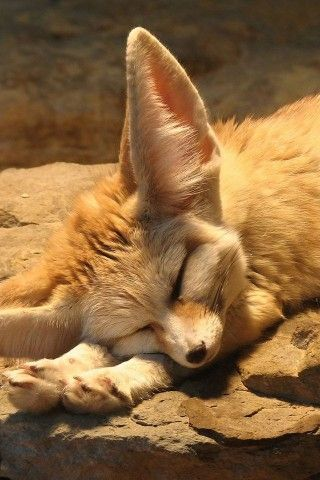

Маленька лисиця феньок може підстрибувати на 120 см.
Феньокі живуть в норах з великою кількістю таємних ходів, які викопують самі.
Найвідоміший приручений феньок - це лис в романі Антуана де Сент-Екзюпері "Маленький принц".
Феньок - найдивніша тварина з роду лисиць. Своє ім'я феньок отримав від арабського fanak, що означає «лисиця». Наукова назва фенека "Vulpes zerda" (Vulpes означає приналежність до роду лисиць, zerda походить від грецького слова xeros, що означає "сухий" і вказує на місце проживання феньока - пустелі Північної Африки і Аравійського півострова). Втім, не всі вчені згодні з приналежністю фенека до роду лисиць, вказуючи на відмінності в будові і поведінці Феньок від інших лисиць. Наприклад, у Феньок всього 32 пари хромосом, в той час як у інших видів лисиць їх число коливається між 35 і 39. У Феньок немає мускусних залоз, характерних для лисиць. Лисиці ведуть одічний спосіб життя, в той час як феньок - соціальна тварина. На підставі цих відмінностей деякі вчені виділяють фенека в особливій рід - "Fennecus".
